원자료 1,361행을 진단·검증·정제해 합금 258종으로 만들고, 기술통계와 머신러닝으로 상(Phase)을 분류하다
데이터: Machaka (2021), Data in Brief 38, 107346 · 분석: Python + Claude Code(AI 에이전트)
문제: 새 합금의 상을 확인하려면 용해·주조·X선 회절 분석까지 실험이 필요하다.
분석 질문: 조성에서 계산되는 열역학 변수만으로, 실험 전에 주조 직후의 상을 맞힐 수 있는가?
하위 질문: ① 상마다 변수 분포가 어떻게 다른가(기술통계) ② 어느 변수가 어느 방향으로 작용하나(SHAP) ③ 단순 규칙보다 나은가
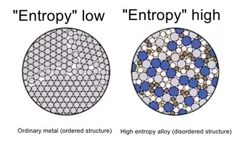
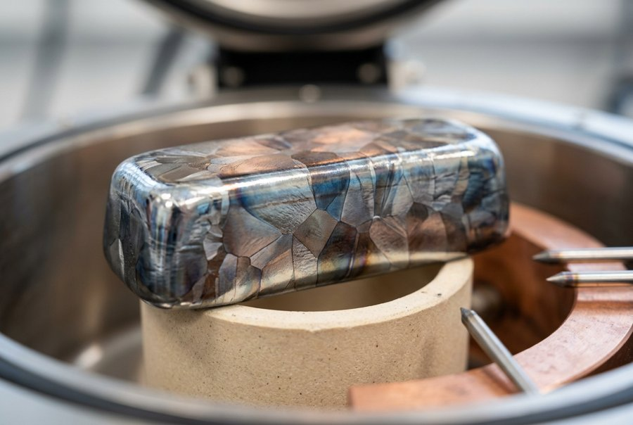
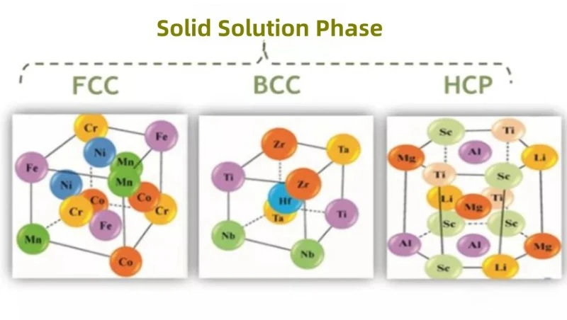
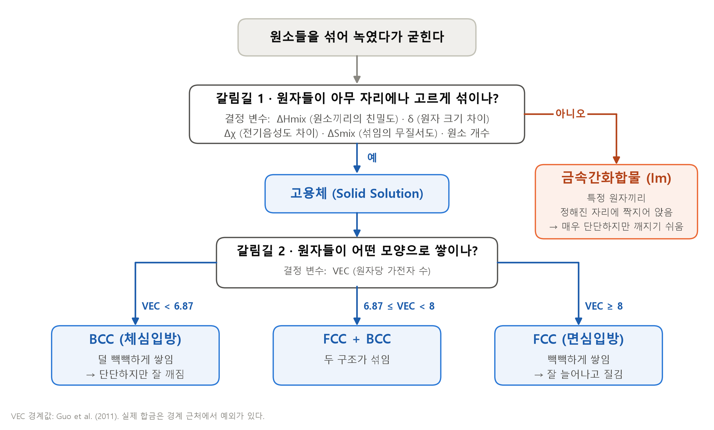
| 변수 | 쉬운 뜻 |
|---|---|
| VEC | 원자당 가전자 수 (접착제 양) |
| ΔHmix | 원소끼리의 친밀도 |
| δ | 원자 크기의 제각각 정도 |
| Δχ | 전자 끌어당기는 힘의 차이 |
| ΔSmix | 섞임의 무질서도 |
| 원소 개수 | 섞인 원소 종류 수 |
이 그림이 맞는지 마지막에 SHAP으로 확인한다.
| 변수 | 척도 | 평균을 낼 수 있나 |
|---|---|---|
| 상 (Phases) | 범주형 · 명목 | 불가 빈도·비율로만 요약 |
| 원소 개수 | 수치형 · 이산 | 가능 정수값, 최빈값도 함께 |
| VEC, δ, Δχ, ΔHmix, ΔSmix | 수치형 · 연속 | 가능 분포를 보고 판단 |
AI 프롬프팅: 참고한 Kaggle 데이터는 비공개였다. AI의 말을 믿지 않고 원 논문의 부록 파일을 직접 내려받아 1,361행 × 53열을 눈으로 확인했다.
| 점검 항목 | 결과 | 의미 |
|---|---|---|
| 인코딩 | UTF-8 실패 | cp1252로 지정해 해결 (‘10°C/min’ 기호가 원인) |
| 완전히 같은 행 | 0행 | 복사·붙여넣기 중복은 없음 |
| 같은 합금 이름 | 890행 반복 | 열처리·논문만 다른 기록 → 지우면 안 되는 중복 |
| 표기만 다른 같은 조성 | 15종 | AlCrFeCoNi = AlCoCrFeNi. 글자 비교로는 못 잡음 |
| 열처리 열 결측 | 758~1,305행 | 빈칸 = ‘처리하지 않음’. 이유가 있는 빈칸 |
| 상 라벨 충돌 | 15종 | 같은 조성인데 논문마다 상이 다름 |
| 이름과 안 맞는 값 | 60건 · 39행 | VEC 38·Δχ 22건 오타 / 39행은 아예 다른 조성으로 계산됨 |
AI 함정 프롬프팅: “정제해줘”가 아니라 “문제를 보고만 하고 아무것도 고치지 마”로 시켰다.
처리 방법은 이 표를 본 뒤 분석 전에 정하고, 정제 로그에 모두 적었다.
① 빈칸에도 이유가 있다
열처리 온도가 빈 칸은 ‘모름’이 아니라 ‘열처리를 안 함’. 같은 합금도 열처리하면 상이 바뀐다(두 상태가 다 있는 49종 중 22종). → 채우지 않고 빈칸인 행(= 주조 직후)만 골라 조건 통일.
② 중복처럼 보이는 것
AlCoCrFeNi는 논문마다 BCC이기도, 금속간화합물이기도 했다. 이전 코드는 ‘첫 행만 남기기’라 행 순서가 정답을 정했다. → 라벨이 충돌하는 15종은 제외, 같은 조성은 이름 표기가 달라도 하나로.
③ 원본(이름)으로 되짚기
합금 이름으로 VEC·Δχ·ΔSmix를 다시 계산했다. ΔSmix가 맞으면 조성은 맞고 값만 오타 → 교정 (VEC 38행, Δχ 22행. 예: TiZrNbTa Δχ 3.92 → 0.10). ΔSmix도 틀리면 잘못된 조성으로 전부 계산 → 제외 (39행. 예: MoNbTaTiW).
극단값(δ 16.9%, ΔHmix −39)은 이름과 일치 → 지우지 않음. 표기가 애매해 검증 못 한 17행(예: NbTaTi30Zr)은 원본 값을 그대로 두었다 — 고치지 않기로 한 결정도 기록한다.
조성 열도 이름에서 옮겨 적은 2차 값이다. 조성 열로 ‘교정’했다면 맞는 VEC 6.50을 틀린 8.00으로 바꿨을 것 — 6.5는 BCC 쪽, 8.0은 FCC 경계다.
54행에서, 정리자가 직접 계산해 넣은 VEC·ΔSmix는 어느 쪽 조성과 맞았나?
| 일치하는 쪽 | 행 수 |
|---|---|
| 합금 이름 | 52 |
| 조성 열 | 1 |
| 둘 다 아님 | 1 |
정리자는 이름 기준의 올바른 조성으로 변수를 계산했고, 실수는 조성 열을 옮겨 적을 때 생겼다 → 이름을 기준으로 검증했다.
이름을 해석할 수 있는 1,343행 기준. 표기가 애매한 17행(예: NbTaTi30Zr)은 추측하지 않고 원본 값을 그대로 두었다.
VEC (가전자 농도) — 원자당 평균 가전자 수
| 원소 | 비율 ci | 가전자 수 VECi | ci × VECi |
|---|---|---|---|
| Al | 2/6 = 0.333 | 3 | 1.000 |
| Co | 1/6 = 0.167 | 9 | 1.500 |
| Cr | 0.167 | 6 | 1.000 |
| Fe | 0.167 | 8 | 1.333 |
| Ni | 0.167 | 10 | 1.667 |
| 합계 | VEC = 6.50 |
가전자 수 = 주기율표 족 번호 (Al 3, Ti 4, Nb 5, Cr 6, Mn 7, Fe 8, Co 9, Ni 10, Cu 11). 6.50 < 6.87 → BCC 영역
ΔSmix (혼합 엔트로피) — 섞임의 무질서도
| 원소 | 비율 ci | ln ci | ci × ln ci |
|---|---|---|---|
| Al | 0.333 | −1.099 | −0.366 |
| Co | 0.167 | −1.792 | −0.299 |
| Cr | 0.167 | −1.792 | −0.299 |
| Fe | 0.167 | −1.792 | −0.299 |
| Ni | 0.167 | −1.792 | −0.299 |
| 합계 | −1.561 |
R = 8.314 J/(K·mol) → ΔSmix = −8.314 × (−1.561) = 12.98 J/(K·mol)
같은 비율로 n개 원소 → ΔSmix = R ln n
3원소 9.13 · 4원소 11.53 · 5원소 13.38 · 6원소 14.90 (히스토그램의 봉우리)
ΔSmix에는 원소 고유값이 없다 → 비율만 맞으면 반드시 같은 값이 나온다 → ‘조성을 제대로 썼나’를 가리는 검증의 열쇠
예시: Al2CoCrFeNi (Al 2 : Co 1 : Cr 1 : Fe 1 : Ni 1, 합계 6). ci = 원소 i의 몰 비율(모두 더하면 1).
| # | 규칙 | 전 | 후 | 이유 |
|---|---|---|---|---|
| 1 | 빈 행 제외 | 1,361 | 1,360 | CSV 끝의 빈 줄 |
| 2 | 이름으로 VEC·Δχ 교정 | 1,360 | 1,360 | 오타 60건, 행 유지 |
| 3 | 잘못된 조성 행 제외 | 1,360 | 1,321 | ΔSmix까지 이름과 다름 |
| 4 | ΔSmix ≥ 1R | 1,321 | 1,292 | 조작적 정의 밖의 일반 합금 |
| 5 | 주조(AC)만 | 1,292 | 1,217 | 분말야금은 제조 경로가 다름 |
| 6 | 가공·열처리 없음 | 1,217 | 470 | 주조 직후 상태로 통일 |
| 7 | 라벨 충돌 제외 | 470 | 404 | 15종, 정답을 정할 수 없음 |
| 8 | 같은 조성은 1행 | 404 | 258 | 관측 단위 = 조성 1종 |
| 9 | 이상치·결측 그대로 | 258 | 258 | 지울 근거 없음, 대치 안 함 |
규칙 한 줄이 결론을 바꾸나?
7번 대신 ‘첫 행만 남기기’
n = 273, 정확도 78.7%
7번 사용: n = 258, 정확도 83.0%
변수 순위는 같지만 정확도는 4%p 차이. 애매한 합금을 빼면 문제가 쉬워진다 — 83%는 ‘정답이 확실한 합금’에서의 성능이다.
회색 행은 행을 지우지 않은 결정. 규칙은 모두 모델 결과를 보기 전에 정했다.
| 변수 | n | 평균 | 중앙값 | 표준편차 | 최솟값 (합금) | 최댓값 (합금) | 평균으로 요약? |
|---|---|---|---|---|---|---|---|
| 원소 개수 | 258 | 5.12 | 5 | 0.84 | 3 (CoFeNi) | 7 (Al0.5CoCrCu0.5FeNiTi0.5) | 가능 대칭 |
| VEC | 258 | 6.09 | 6.52 | 1.53 | 3.46 (Al58.5Mg31.5…) | 9.00 (CoFeNi) | 불가 봉우리 둘 |
| 원자 크기 차이 δ (%) | 258 | 5.34 | 5.34 | 2.07 | 0.75 (CoFeNi) | 16.86 (AlCCoCrFeNi) | 가능 꼬리 주의 |
| 전기음성도 차이 Δχ | 258 | 0.17 | 0.14 | 0.08 | 0.03 (CoFeNi) | 0.38 (HfNbTaTiZrMoW) | 중앙값 오른쪽 꼬리 |
| ΔHmix (kJ/mol) | 258 | −7.54 | −6.21 | 7.74 | −39.45 (Mo0.5NbHf0.5ZrTiSi0.9) | 4.16 (CoCrCuFeMn) | 중앙값 왼쪽 꼬리 |
| ΔSmix (J/K·mol) | 258 | 12.89 | 13.15 | 1.55 | 8.34 (Al58.5Mg31.5…) | 16.18 (HfNbTaTiZrMoW) | 불가 봉우리 여럿 |
ΔHmix: 왼쪽으로 꼬리가 긴 분포(왜도 −0.94). 강하게 음수인 소수 합금(대부분 금속간화합물)이 평균(−7.54)을 중앙값(−6.21)보다 꼬리 쪽으로 끌어간다.
평균과 중앙값의 차이가 표준편차의 0.15배를 넘거나 봉우리가 둘 이상이면 평균 하나로 요약하지 않았다. 정제 후 결측 0건.
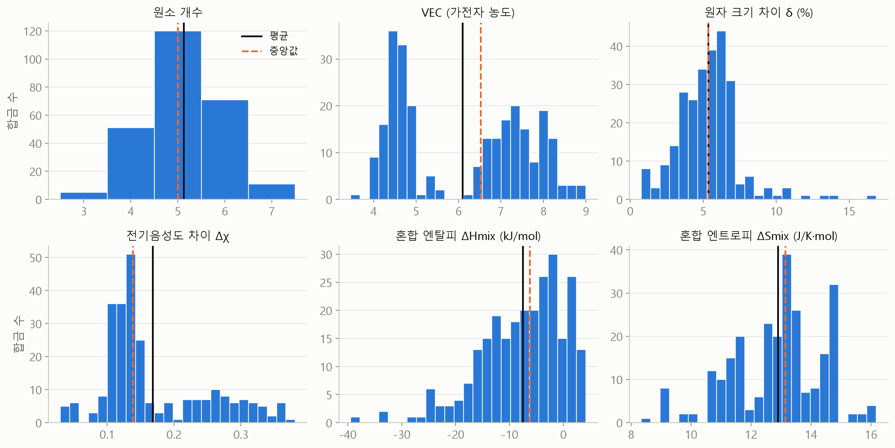
VEC는 이봉 분포. 평균 6.09 자리에는 합금이 거의 없다 — 평균이 빈자리를 가리킨다. 두 집단이 섞였다는 신호 → 상별로 쪼갠다.
ΔSmix의 봉우리들은 11.5·13.4·14.9 = R·ln4·ln5·ln6. 4·5·6원소를 똑같은 비율로 섞은 합금이 많다는 뜻이다.
검은 실선 = 평균, 주황 점선 = 중앙값. 원소 개수는 정수라 구간을 1 단위로 그렸다.
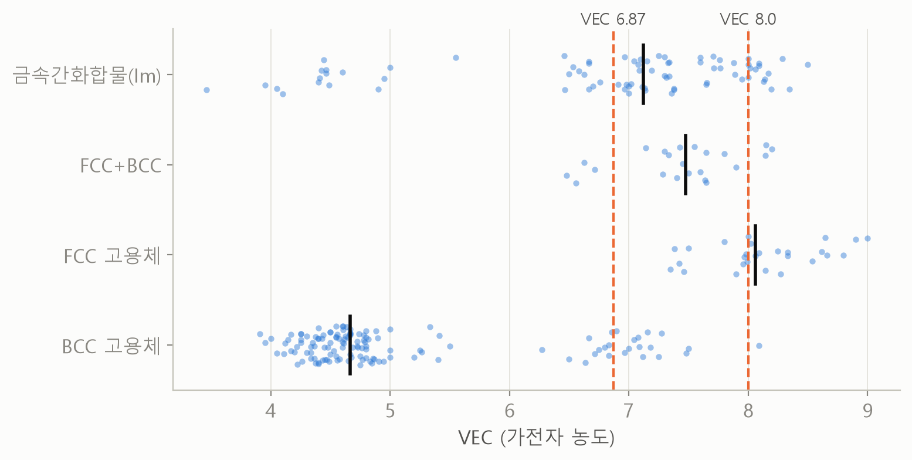
| 상 | n | VEC 평균 (SD) | 중앙값 | ΔHmix 중앙값 |
|---|---|---|---|---|
| BCC | 131 | 5.03 (0.99) | 4.67 | −2.8 |
| FCC+BCC | 22 | 7.43 (0.49) | 7.47 | −7.8 |
| FCC | 27 | 8.12 (0.47) | 8.06 | −5.0 |
| 금속간화합물 | 78 | 6.79 (1.30) | 7.12 | −11.8 |
쪼개고 나니 각 상의 표준편차는 0.5~1.0으로 전체(1.53)보다 훨씬 작다. 경험 규칙(VEC < 6.87 → BCC, ≥ 8 → FCC)과 일치.
금속간화합물은 VEC가 넓게 퍼져(SD 1.30) 못 가른다. 대신 ΔHmix가 가장 음수다.
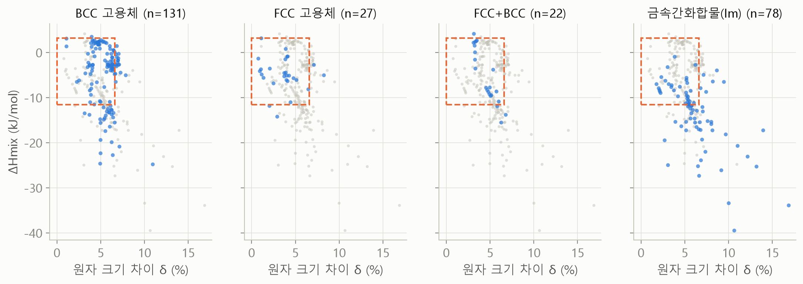
주황 점선 = Guo & Liu(2011)의 고용체 형성 영역(δ ≤ 6.6%, −11.6 ≤ ΔHmix ≤ 3.2 kJ/mol). 규칙 하나로는 부족 → 여러 변수를 함께 쓰는 모델.
SMOTE·전처리는 학습 조각 안에서만. 시험 조각을 건드리면 점수가 부풀려진다(슬라이드 22).
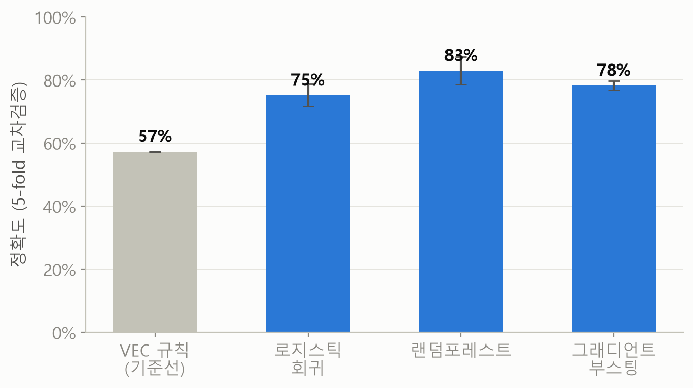
| 방법 | 정확도 (SD) | Macro F1 |
|---|---|---|
| 전부 BCC라고 찍기 | 50.8% | — |
| VEC 규칙 (기준선) | 57.4% | 0.42 |
| 로지스틱 회귀 | 75.2% (3.6) | 0.68 |
| 랜덤포레스트 | 83.0% (4.4) | 0.79 |
| 그래디언트 부스팅 | 78.3% (1.5) | 0.73 |
BCC가 51%라 정확도만 보면 과대평가된다 → 상마다 고르게 맞혔는지 보는 Macro F1을 함께 보고한다.
입력 변수 6개, 5-fold 층화 교차검증 평균. 괄호 = 5회의 표준편차(%p).
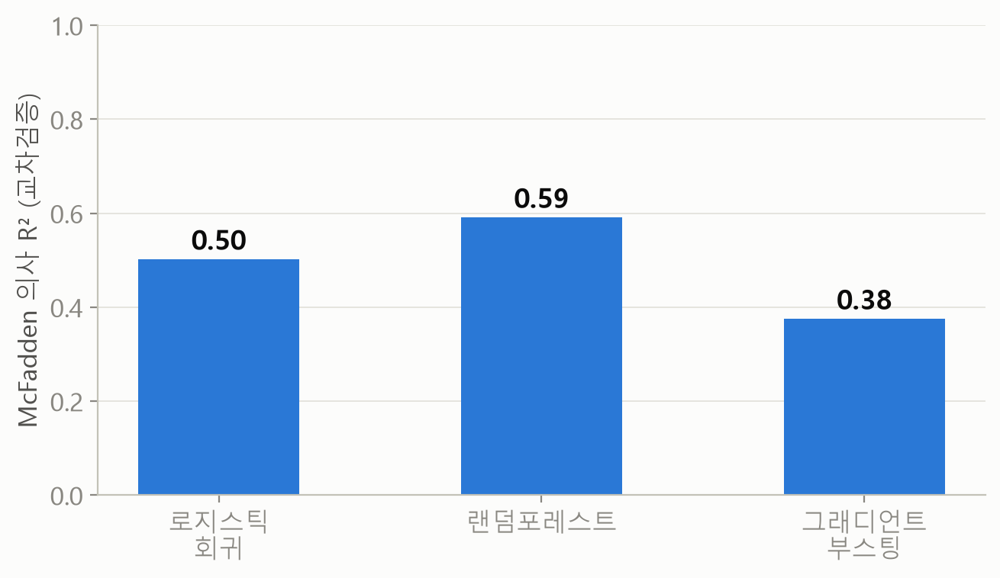
R²는 숫자를 예측하는 회귀용 지표다. 상(범주)을 맞히는 분류에는 대신 McFadden 의사 R²를 쓴다.
로그손실: 정답에 준 확률이 낮을수록 커지는 벌점. 5-fold 교차검증의 시험 조각에서 계산.
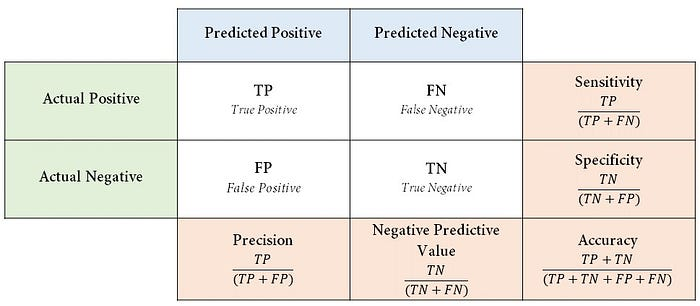
예: “FCC인가, 아닌가”만 볼 때
우리 문제는 상이 4개라 4×4 표가 된다. 다음 장에서 실제 결과를 읽는다.
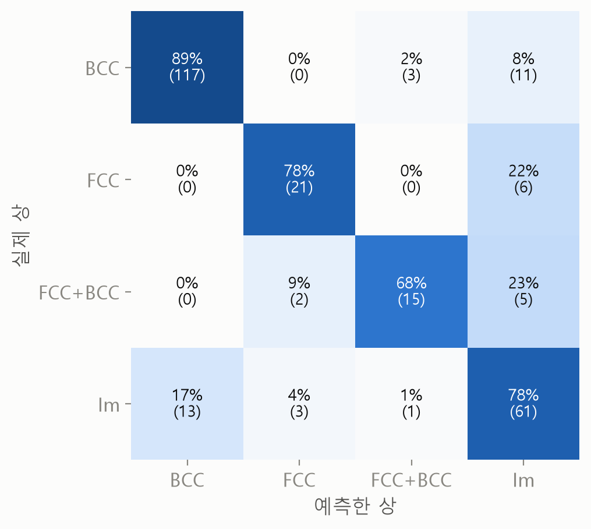
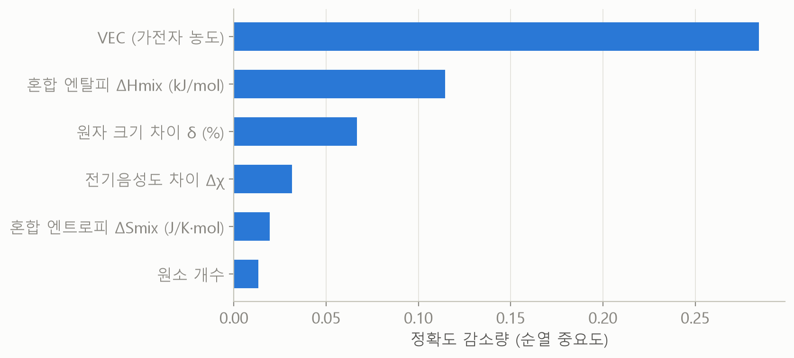
BCC(89%)는 잘 맞히고, FCC+BCC 2상은 68% — 22종뿐이라 배울 예가 적고, 틀린 것의 대부분(23%)은 금속간화합물로 갔다. 순열 중요도는 VEC가 압도적, ΔHmix가 2위.
왼쪽: 혼동행렬(교차검증 예측, 행 = 실제 상, 재현율) · 오른쪽: 순열 중요도(변수 하나를 뒤섞었을 때 정확도가 떨어지는 정도, 5개 fold 평균).
| 순열 중요도 | SHAP | |
|---|---|---|
| 질문 | 이 변수를 망가뜨리면 얼마나 틀리나 | 이 예측에 각 변수가 얼마나 기여했나 |
| 방향 (+/−) | 모름 | 앎 |
| 합금 하나 설명 | 불가 | 가능 |
| 상별로 따로 | 하나로 합쳐짐 | 상마다 따로 |
두 방법을 함께 써서 순위가 같은지 교차 확인한다.
SHAP은 ‘모델이 이렇게 판단했다’를 설명할 뿐, 자연 법칙을 증명하지는 않는다. Lundberg & Lee (2017).
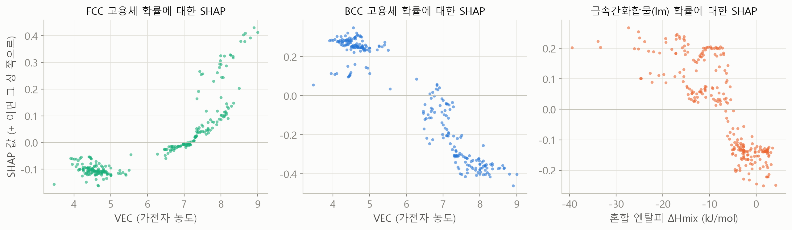
VEC → FCC/BCC: 약 7.3 위에서 FCC 쪽(+), 약 6.9 위에서 BCC 반대쪽(−). 문헌 경계 6.87과 거의 같다.
ΔHmix → 금속간화합물: 약 −7 kJ/mol보다 음수일수록 Im 쪽(+). ‘원소끼리 너무 친하면 짝지어 뭉친다’.
순위 교차 확인: SHAP과 순열 중요도 모두 VEC → ΔHmix → δ → Δχ → ΔSmix → 원소 개수.
점 하나 = 합금 1종. 세로축 = 그 변수가 해당 상 확률을 얼마나 올렸나(+)/내렸나(−). 258종 전체로 학습한 랜덤포레스트.
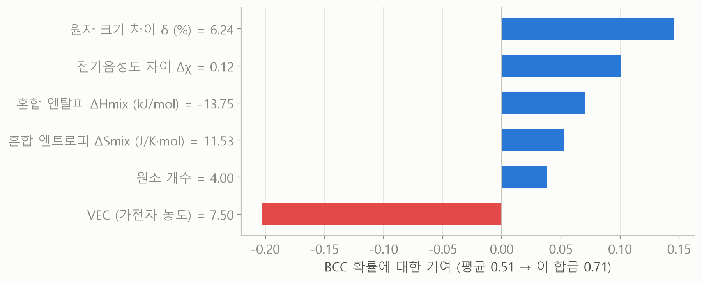
Al은 원자가 크다 → δ가 커진다 → 빽빽한 FCC가 불편해져 BCC로. VEC 규칙의 예외(Al 합금)를 모델은 δ로 잡아냈다.
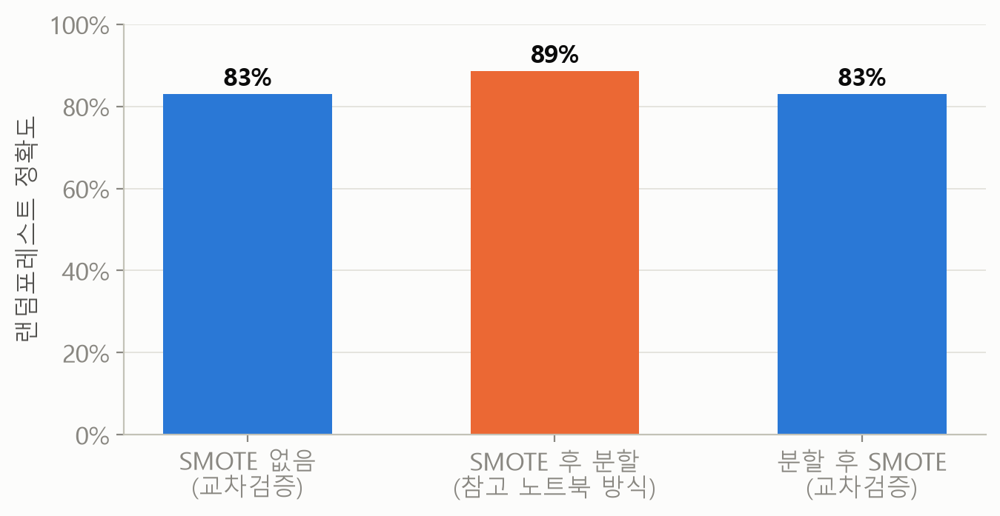
3주차의 교훈과 같다: 가짜 값을 끼워 넣으면 숫자가 실제보다 좋아 보인다 — 평균 대치가 표준편차를 줄이는 것과 같은 구조.
발견한 것
한계 — 빠진 데이터
| 단계 | AI(Claude Code)에게 맡긴 것 | 사람이 판단한 것 |
|---|---|---|
| 질문 | — | 주제·질문·조작적 정의 |
| 명세 | 코드 작성, 계산 | “고치지 말고 보고만”, “중앙값·분포 함께” |
| 검증 | 재계산·교차검증·SHAP | 링크 직접 확인, 이름으로 값 대조, 행 수 비교 |
←/→ 키 또는 아래 버튼으로 넘기기 · 인쇄(Ctrl+P) 시 전체 슬라이드 출력